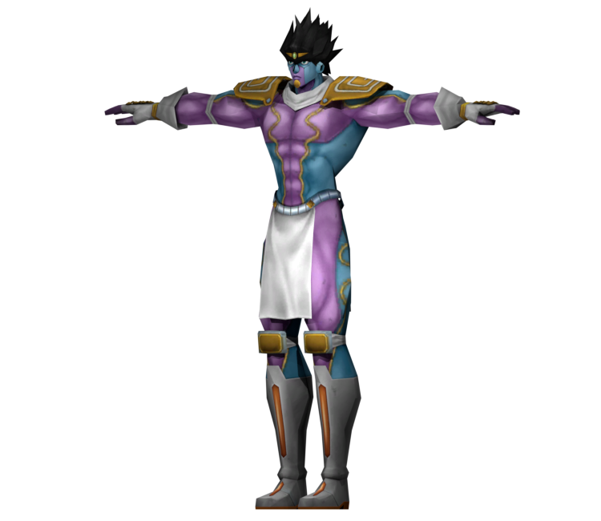

Star Platinum is a powerful and versatile Stand with incredible strength, speed, and precision.
Star Platinum is known for its ability to stop time for a brief moment, allowing Jotaro to move and react while everything else is frozen.
This ability is called "The World" and is one of the most iconic powers in the JoJo's Bizarre Adventure series.

https://jojo.fandom.com/wiki/Jotaro_Kujo More on Jotaro_Kujo the stand user Fandom Page